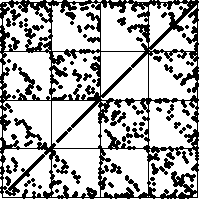

| 1(b) Note the time series breaks into four distinct regimes, indicated by the vertical lines. |
| Left regime: points lie in bins 1, 2, and 3, not in 4. The
IFS driven by this portion of the time series lies on the Sierpinski gasket
with vertices |
| Left central regime: points lie in bins 2, 3, and 4, not in 1. The
IFS driven by this portion of the time series lies on the Sierpinski gasket
with vertices |
| Right central regime: points lie in bin 4. The IFS driven by this
portion of the time series converges through the previous gasket to the point
|
| Right regime: points lie in bins 1 and 4. The IFS generated by this
portion of the time series lies along the segment joining the points
|
|  |
Return to Homework 3 Practice.